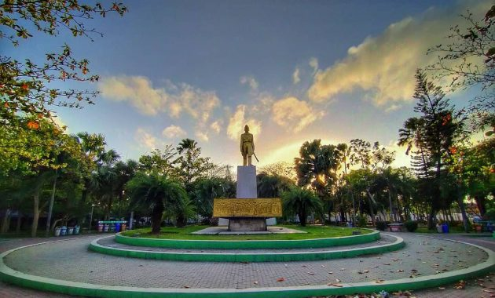

Selamat datang di Dolan Kuy! Disini kamu dapat mengetahui wisata rekomendasi di wilayah Kota kediri 😊 Lihat Lebih Detail
Galeri Disini kamu bisa melihat-lihat daerah wisata Kota Kediri, akan ragam budaya dan keindahan. Alun - Alun Kota  Alun-alun Kediri dulunya berbentuk tanah gersang berumput serta bercokol patung warna emas ditengahnya yang tidak lain yaitu patung Mayor Bismo, pada th. 90′an dipugar jadi suatu taman yang komplit dengan arena pejalan kaki serta sentra kaki lima yang tersusun rapi disamping utaranya. Hingga yang ingin jajan makanan Kediri dapat segera singgah jajan di sana. Harganya pun cukup terjangkau, salah satunya ada bakso, rujak, mie, sate, gado-gado, soto dsb. Taman Sekartaji Taman Sekartaji merupakan salah satu taman kebanggaan warga Kediri. Taman ini menawarkan suasana hijaunya pepohonan di tengah ramainya lalu-lalang aktivitas Kota Kediri. Sempat tak terawat di masa awal pembangunannya, kini taman kota ini telah direvitalisasi dengan konsep yang lebih segar. Taman ini pun diresmikan kembali di tahun 2017. Jembatan Brawijaya Jembatan Brawijaya lama yang memang sudah jadi ikon bakal menjadi wajah baru Kota Kediri. Desain untuk menjadikan Jembatan Brawijaya lebih segar tengah disiapkan sehingga diharapkan mampu menghadirkan sensasi yang berbeda. Hal itu menyusul permintaan dari Wali Kota Abdullah Abu Bakar yang dipenuhi Gubernur Jabar, Ridwan Kamil atas keberadaan Jembatan Brawijaya yang mulai dibangun pada 1855 itu. Sebelumnya, pria berlatar arsitek ini sempat pula merancang Taman Brantas yang lokasinya masih dalam satu kawasan dengan jembatan yang bernama Jembatan Brug Over den Brantas te Kediri itu.